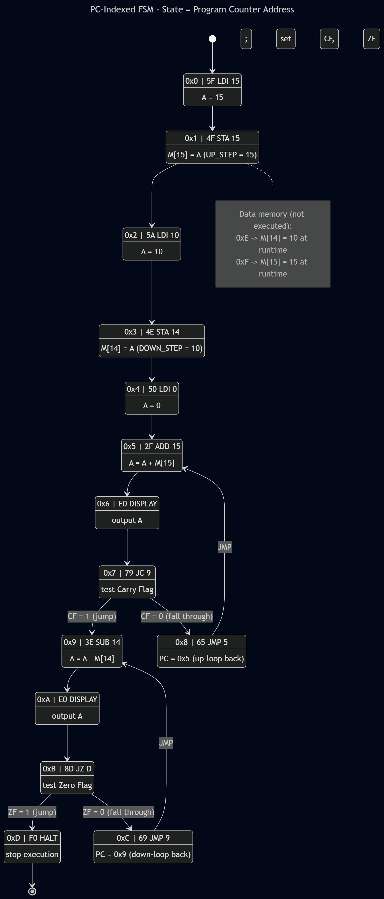
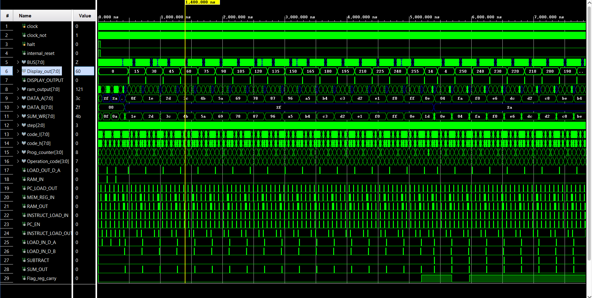
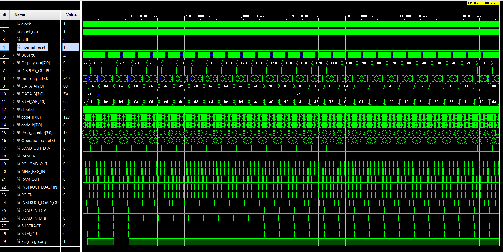

8‑Bit Microcoded Computer (Verilog RTL)#
A complete, bus‑oriented 8‑bit von Neumann computer described in Verilog. The
datapath, control, ALU, RAM, program counter and step sequencer are all RTL
modules; the control logic is microcoded, driven by a microcode ROM
(microcode_control) whose contents are defined by the Python tables
MICROCODE_0 … MICROCODE_3.
The design supports register/memory arithmetic with carry and zero flags and
conditional branches (JC, JZ) implemented as four flag‑selected microcode
banks.
Table of Contents#
- Features
- Architecture
- Repository Layout
- Control Word & Signal Decode
- Microcode ROM (LUT / EEPROM)
- Flag‑Selected Banks:
MICROCODE_0…3 - Instruction Set Architecture
- Per‑Instruction Microcode
- Flags & Sequencing
- Module Reference
- Example Program
- Simulation
1. Features#
| Property | Value |
|---|---|
| Architecture | 8‑bit, single shared bus, von Neumann (unified RAM) |
| Data bus width | 8 bits (BUS_PORT[7:0]) |
| Address bus width | 4 bits (low nibble of the bus, BUS_PORT[3:0]) |
| RAM | 16 words × 8 bits = 128 bits |
| RAM address range | 0x0 … 0xF |
| Instruction format | [7:4] opcode, [3:0] operand |
| Microcode word | 16 control bits (split into control_h / control_l) |
| Micro‑steps | 8 per instruction (step[2:0], 0–7) |
| Microcode banks | 4 (MICROCODE_0…3), selected by {Flag_zero, Flag_carry} |
| ALU | 8‑bit add / subtract (2’s‑complement), carry out |
| Status flags | Carry (Flag_reg_carry), Zero (Flag_reg_zero) |
| Control | Microcoded; one tristate driver on the bus per micro‑step |
2. Architecture#
All modules communicate over a single tristate bus, BUS_PORT. At most one
buffer is enabled per micro‑step. The low nibble BUS_PORT[3:0] carries
addresses/operands (PC and IR operand); the full byte carries data.
┌───────────────────────────── BUS_PORT[7:0] ─────────────────────────────┐
│ │
┌──────────┐ │ ┌──────────┐ ┌──────────┐ ┌──────────────┐ ┌──────────────┐ │
CLK ─▶│ STEP │ ├──▶│ Reg A │──▶│ ALU │──▶│ Reg B (in) │ │ RAM │◀────▶│
│ (3-bit, │ │ │ data_reg │ │ ALU_SUM │ │ data_reg │ │ 16×8 + MAR │ │
│ ~CLK) │ │ └────┬─────┘ │ A±B,Cout │ └──────────────┘ └──────┬───────┘ │
└────┬─────┘ │ │buf A └────┬─────┘ buf RAM │
│ step │ LOAD_OUT_D_A SUM_OUT │
▼ │ │
┌──────────────┐ │ ┌──────────┐ ┌──────────────┐ ┌──────────────┐ │
OP ───▶│ microcode │ ├──▶│ Instr │──▶│ PC (4-bit) │──▶│ DISP_OUT │ │
flags ▶│ _control │ │ │ Register │ │ program_ │ │ (display reg)│ │
│ (LUT/EEPROM) │ │ │ +operand │ │ counter │ └──────────────┘ │
└──────┬───────┘ │ └────┬─────┘ └──────┬───────┘ │
control_h/l │ INSTRUCT_ PC_LOAD_OUT / JUMP_PC │
│ │ LOAD_OUT (operand → bus[3:0]) │
└─────────┴──── decoded control signals ───────────────────────────────────────────┘
Bus discipline (enforced by the microcode):
- Exactly one of
LOAD_OUT_D_A,SUM_OUT,RAM_OUT,PC_LOAD_OUT,INSTRUCT_LOAD_OUTmay be asserted in any micro‑step. RAM_INandRAM_OUTare never asserted together.- Register B has no bus driver — it is a dedicated ALU input only.
3. Repository Layout#
Filenames below are the conventional layout for this design; module names are taken verbatim from the Verilog.
.
│ ├── circuit.v # top module (datapath + control wiring)
│ ├── microcode_control.v # microcode ROM (LUT/EEPROM): OP+step+flags → control_h/l
│ ├── data_register.v # 8-bit load-enable register (Reg A, Reg B, IR)
│ ├── ALU_SUM.v # 8-bit adder/subtractor with carry out
│ ├── zero_flag.v # zero detect on ALU result
│ ├── RAM_4b_adrs_8b_wrd_gates.v # 16×8 RAM with integrated MAR
│ ├── program_counter.v # 4-bit PC (enable + jump-load)
│ ├── buffer_8bit.v # 8-bit tristate bus buffer
│ ├── buffer_4bit.v # 4-bit tristate bus buffer
│ └── STEP.v # 3-bit step counter (clocked on ~CLK)
├── microcode/
│ └── microcode.py # MICROCODE_0..3 + signal definitions / ROM generator
└── sim/
└── tb_circuit.v # testbench (not included in provided sources)
4. Control Word & Signal Decode#
The microcode word is 16 bits, delivered to the datapath as two bytes,
control_h (high) and control_l (low). The top module decodes them exactly as
follows.
Low byte — control_l:
| Bit | Verilog net | Function |
|---|---|---|
control_l[7] | feedback_rst | Microcode‑driven internal reset (internal_reset = feedback_rst | RESET) |
control_l[6] | MEM_REG_IN | Latch address into MAR (inside RAM) |
control_l[5] | RAM_IN | Write bus → RAM |
control_l[4] | RAM_OUT | Drive RAM → bus |
control_l[3] | INSTRUCT_LOAD_OUT | Drive IR operand [3:0] → bus |
control_l[2] | INSTRUCT_LOAD_IN | Latch bus → IR |
control_l[1] | LOAD_IN_D_A | Latch bus → Reg A |
control_l[0] | LOAD_OUT_D_A | Drive Reg A → bus |
High byte — control_h:
| Bit | Verilog net | Function |
|---|---|---|
control_h[7] | SUM_OUT | Drive ALU result → bus |
control_h[6] | SUBTRACT | ALU mode: 0 = add, 1 = subtract |
control_h[5] | LOAD_IN_D_B | Latch bus → Reg B |
control_h[4] | flag_en | Latch carry & zero flags |
control_h[3] | PC_EN | Increment PC |
control_h[2] | PC_LOAD_OUT | Drive PC → bus |
control_h[1] | JUMP_PC | Load PC from bus (jump) |
control_h[0] | DISPLAY_OUTPUT | Latch bus → DISP_OUT |
Symbolic ↔ RTL cross‑reference
The microprogram (microcode.py) is written with symbolic signal names. Their
functional correspondence to the RTL nets is:
| Microcode symbol | RTL net | Microcode symbol | RTL net |
|---|---|---|---|
pc_counter_out | PC_LOAD_OUT | load_b_in | LOAD_IN_D_B |
pc_counter_en | PC_EN | sum_out | SUM_OUT |
pc_counter_jump | JUMP_PC | subtract | SUBTRACT |
mem_in | MEM_REG_IN | flags_in_carry | flag_en |
ram_in | RAM_IN | display_d_in | DISPLAY_OUTPUT |
ram_out | RAM_OUT | halt | feedback_rst (see note) |
instruct_in | INSTRUCT_LOAD_IN | load_a_in | LOAD_IN_D_A |
instruct_out | INSTRUCT_LOAD_OUT | load_a_out | LOAD_OUT_D_A |
Note on bit numbering.
microcode.pyand the RTL use independent bit numbering for the 16‑bit word (e.g. the Python definitions placehaltat the MSB, while the RTL decodesfeedback_rstfromcontrol_l[7]). Themicrocode_controlLUT is responsible for emitting the exactcontrol_h/control_lpattern the datapath expects. The table above maps the two by function. The top‑level snippet decodes no separatehaltnet; theHLTmicro‑step asserts the top low‑byte bit (feedback_rst/ internal reset), which is the mechanism used to stop instruction progress — verify againstmicrocode_control.vif you change the encoding.
5. Microcode ROM (LUT / EEPROM)#
microcode_control is the control store. Conceptually it is addressed by:
address = { Flag_zero, Flag_carry, OP_CODE[3:0], step[2:0] } // 9 bits → 512 entries
OP_CODE[3:0]— opcode from the instruction registerstep[2:0]— current micro‑step (0–7){Flag_zero, Flag_carry}— selects one of four banks (MICROCODE_0…3)
Each entry is a 16‑bit control word. In a discrete (EEPROM) build this is two
8‑bit ROMs (one for control_h, one for control_l). In RTL it is the
microcode_control module.
Every opcode begins with the same two‑step fetch:
step 0: pc_counter_out | mem_in # PC → MAR
step 1: ram_out | instruct_in | pc_counter_en # RAM[PC] → IR, PC++
Steps 2–7 are the per‑instruction execute phase. Unused tail steps are 0.
6. Flag‑Selected Banks: MICROCODE_0…3#
The four banks are identical for every opcode except the two conditional jumps. The bank is chosen by the current flag state:
| Bank | Flag_zero | Flag_carry | JC (0111) taken? | JZ (1000) taken? |
|---|---|---|---|---|
MICROCODE_0 | 0 | 0 | no | no |
MICROCODE_1 | 0 | 1 | yes | no |
MICROCODE_2 | 1 | 0 | no | yes |
MICROCODE_3 | 1 | 1 | yes | yes |
Selection index =
{Flag_zero, Flag_carry}(zero = MSB, carry = LSB).
A taken conditional jump uses the same micro‑step as an unconditional jump:
step 2: instruct_out | pc_counter_jump # operand → PC
A not‑taken conditional jump has step 2 = 0, so it falls through to the
next sequential instruction (the PC was already incremented during fetch).
This is how branching is realized without a dedicated branch‑condition mux: the flags pick the bank, and the bank either contains the jump micro‑step or doesn’t.
7. Instruction Set Architecture#
Instruction word: [7:4] opcode, [3:0] operand (4‑bit address or immediate).
| Opcode | Mnemonic | Operand | Effect | Steps |
|---|---|---|---|---|
0000 | NOP | — | PC ← PC+1 | 0–1 |
0001 | LDA | addr | A ← RAM[addr] | 0–3 |
0010 | ADD | addr | B ← RAM[addr]; A ← A+B; set CF, ZF | 0–4 |
0011 | SUB | addr | B ← RAM[addr]; A ← A−B; set CF, ZF | 0–4 |
0100 | STA | addr | RAM[addr] ← A | 0–3 |
0101 | LDI | imm | A ← operand (4‑bit immediate) | 0–2 |
0110 | JMP | addr | PC ← operand | 0–2 |
0111 | JC | addr | if CF: PC ← operand | 0–2 |
1000 | JZ | addr | if ZF: PC ← operand | 0–2 |
1001–1101 | unused | — | PC ← PC+1 (fetch only) | 0–1 |
1110 | OUT | — | DISP_OUT ← A | 0–2 |
1111 | HLT | — | stop instruction progress | 0–2 |
JC(0111) andJZ(1000) are implemented via the flag‑selected banks — they are not “unused”.ADD/SUBupdate both flags.
8. Per‑Instruction Microcode#
Symbolic control words per micro‑step (steps not shown are 0):
| Opcode | S0 | S1 | S2 | S3 | S4 |
|---|---|---|---|---|---|
NOP | pc_out|mem_in | ram_out|instr_in|pc_en | — | — | — |
LDA | pc_out|mem_in | ram_out|instr_in|pc_en | instr_out|mem_in | ram_out|load_a_in | — |
ADD | pc_out|mem_in | ram_out|instr_in|pc_en | instr_out|mem_in | ram_out|load_b_in | sum_out|load_a_in|flags_in |
SUB | pc_out|mem_in | ram_out|instr_in|pc_en | instr_out|mem_in | ram_out|load_b_in | sum_out|load_a_in|subtract|flags_in |
STA | pc_out|mem_in | ram_out|instr_in|pc_en | instr_out|mem_in | ram_in|load_a_out | — |
LDI | pc_out|mem_in | ram_out|instr_in|pc_en | instr_out|load_a_in | — | — |
JMP | pc_out|mem_in | ram_out|instr_in|pc_en | instr_out|pc_jump | — | — |
JC † | pc_out|mem_in | ram_out|instr_in|pc_en | instr_out|pc_jump (if CF) / 0 | — | — |
JZ † | pc_out|mem_in | ram_out|instr_in|pc_en | instr_out|pc_jump (if ZF) / 0 | — | — |
OUT | pc_out|mem_in | ram_out|instr_in|pc_en | load_a_out|display_d_in | — | — |
HLT | pc_out|mem_in | ram_out|instr_in|pc_en | halt | — | — |
† S2 of JC/JZ is filled in or blank depending on the active bank (see §6).
Abbreviations: pc_out=pc_counter_out, pc_en=pc_counter_en,
pc_jump=pc_counter_jump, instr_in=instruct_in, instr_out=instruct_out,
flags_in=flags_in_carry.
9. Flags & Sequencing#
ALU. ALU_SUM computes A + B or A − B (A + ~B + 1, 2’s complement)
based on SUBTRACT, producing SUM_WR[7:0] and carry ALU_CARRY_OUT. The ALU
is purely combinational — results are captured by Reg A via LOAD_IN_D_A.
Flags. Both flag registers update only when flag_en (flags_in_carry) is
asserted — i.e. on the final step of ADD/SUB:
Flag_reg_carry ← ALU_CARRY_OUTFlag_reg_zero ← zero_flag_en(asserted whenSUM_WR == 0, fromzero_flag)
Both reset to 0 on RESET. They persist until the next ADD/SUB, so a JC/JZ
following arithmetic reads the freshly latched condition.
Step counter. STEP is a 3‑bit counter clocked on ~CLK (clock_not), so
control signals settle half a cycle before the datapath’s rising‑edge captures.
It rolls 0→7; the microprogram leaves unused steps as 0 (idle) until the next
fetch.
Reset path. internal_reset = feedback_rst | RESET. The microcode can assert
feedback_rst (top low‑byte bit) to force the internal reset line.
10. Module Reference#
| Module | Role | Key ports |
|---|---|---|
circuit | Top: datapath + control decode + bus wiring | CLK, RESET, BUS_PORT, DISP_OUT, flag/step/opcode observ. outputs |
microcode_control | Microcode ROM (LUT/EEPROM) | in: OP_CODE, step, Flag_reg_carry, Flag_reg_zero → out: control_l, control_h |
data_register | 8‑bit load‑enable register (A, B, IR) | Bus_8, CLK, ENABLE, RESET → DATA_8 |
ALU_SUM | 8‑bit adder/subtractor | A, B, SUBTRACTION → SUM, C_OUT |
zero_flag | Zero detect on ALU result | SUM_WR → zero_flag_en |
RAM_4b_adrs_8b_wrd_gates | 16×8 RAM with integrated MAR | ADDRS_4, DATA_8, RAM_IN, MEM_REG_IN, clk, Reset → OUT |
program_counter | 4‑bit PC | clk, reset, counter_En, jump_pc, bus_pc → out |
buffer_8bit / buffer_4bit | Tristate bus buffers | IN, ENABLE → OUT (Hi‑Z when disabled) |
STEP | 3‑bit micro‑step counter | CLK_bar, RESET → step_out |
Bus connections of note
- Reg B (
reg_B) drives the ALU only — it has no output buffer to the bus. - The MAR lives inside
RAM_4b_adrs_8b_wrd_gatesand latchesBUS_PORT[3:0]whenMEM_REG_INis asserted. - PC and IR‑operand share the 4‑bit
LSB_BUS, which ties intoBUS_PORT[3:0]. DISP_OUTlatches the raw 8‑bit value of A onOUT; any 7‑segment decode ROM is external to this RTL.
11. Example Program#
Demonstrates ADD/SUB, the carry/zero flags, and conditional jumps. It
accumulates by 15 until a carry occurs, then decrements by 10 until the result
is zero, displaying each intermediate value.
Addr Hex Mnemonic Effect
---- --- ----------- -----------------------------------------
0x0 5F LDI 15 A ← 15
0x1 4F STA 15 M[15] ← 15
0x2 5A LDI 10 A ← 10
0x3 4E STA 14 M[14] ← 10
0x4 50 LDI 0 A ← 0
0x5 2F ADD 15 A ← A + M[15]; set CF, ZF
0x6 E0 OUT display A
0x7 79 JC 9 if CF: PC ← 9
0x8 65 JMP 5 PC ← 5 (loop)
0x9 3E SUB 14 A ← A − M[14]; set CF, ZF
0xA E0 OUT display A
0xB 8D JZ D if ZF: PC ← D
0xC 69 JMP 9 PC ← 9 (loop)
0xD F0 HLT stop
0xE 00 data (← 10 at runtime)
0xF 00 data (← 15 at runtime)
Behaviour: the add‑loop emits 15, 30, 45, … , 255, then 14 (the step that
overflows past 255 sets the carry and exits to 0x9). The sub‑loop then emits
4, 250, 240, … , 10, 0, halting when the result reaches zero (zero flag set →
JZ taken → HLT).

12. Simulation#
The provided sources include the top module and the microcode tables but not
the submodule bodies or a testbench. To simulate, supply
microcode_control, data_register, ALU_SUM, zero_flag,
RAM_4b_adrs_8b_wrd_gates, program_counter, buffer_8bit, buffer_4bit,
STEP, and a testbench, then:
# Icarus Verilog iverilog -o cpu rtl/*.v sim/tb_circuit.v vvp cpu # View waves gtkwave dump.vcd


A testbench should driveCLK/RESET, preload RAM with the program, and observe
DISP_OUT, step, OP_CODE, Flag_reg_carry, and Flag_reg_zero.
The design uses a shared tristate bus (
BUS_PORTwith Hi‑Z buffers). This simulates directly; for FPGA synthesis, the shared internal tristate bus is typically converted to a multiplexer, since most FPGA fabrics lack internal tristate nets.
Built as an 8‑bit microcoded CPU exercise in digital design — microcoded control, bus arbitration, flag‑based branching, and a Verilog datapath.
Reference : https://youtube.com/playlist?list=PLowKtXNTBypGqImE405J2565dvjafglHU&si=m15Jp1N0SSAbi7Ka